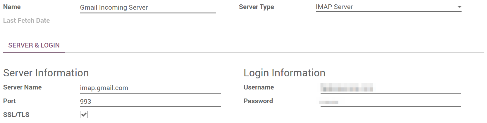

Когда это необходимо
Использование ваших собственных почтовых серверов необходимо для отправки и получения сообщений в Odoo Community или Odoo Enterprise. В Odoo Online встроено готовое решение для электронной почты, которое работает сразу. Но и в этой версии вы можете использовать свои серверы электронной почты. Ниже приведены некоторые соображения.
Как это настроить
Под правами системного администратора перейдите по ссылке и кликните External Email Servers (обратите внимание: этот флажок появляется только в Odoo 10). Затем выполните следующие шаги.
Примечание
Office 365 email servers don't allow easiliy to send external emails from hosts like Odoo. Refer to the Office 365 documentation to make it working.
Настройка сервера исходящей почты для отправки сообщений
Вам нужны данные SMTP вашего поставщика электронной почты (Gmail, Outlook, Yahoo, AOL и т. Д.), А также учетные данные администратора. После того, как вся информация будет заполнена, нажмите Проверка подключения.

Установка сервера входящей почты для входящих сообщений
Заполните форму в соответствии с настройками поставщика электронной почты. Оставьте Действия, выполняемые при входящих письмах пустыми. После того, как вся информация будет заполнена, нажмите Тест и подтверждение.
Примечание
По умолчанию входящие сообщения проверяются каждые 5 минут. Вы можете изменить это значение в режиме разработчика. Перейдите в и найдите Mail: Fetchmail Service.
Задайте имя домена
Введите имя домена ваших серверов электронной почты (например, mycompany.com) в разделе «Общие настройки».

Создание catchall адреса
Когда контакт отвечает на адрес электронной почты, отправленный из Odoo, адрес в графе письма reply-to является главным адресом, используемым для направления ответа на нужный дискуссионный поток в Odoo (возможность, заказ, задача и т.д.) и, соответственно, в папку «Входящие» для всех подписчиков на данный элемент. По умолчанию это адрес «catchall@», но его можно изменить.
Создайте общий адрес в настройках сервера электронной почты. Мы советуем вам использовать «catchall@», чтобы все сразу заработало. Если вы хотите использовать другой псевдоним, вам нужно сделать следующее:
Активируйте режим разработчика на панели настроек.

Обновите экран. Затем перейдите по адресу и введите свой собственный универсальный псевдоним в mail.catchall.alias.

Примечание
Вы можете отредактировать псевдоним электронной почты, используемый для возвращенных сообщений таким же образом.
Как использовать собственные почтовые серверы с Odoo Online
Odoo Online предлагает встроенное и готовое к использованию решение с доменом @yourcompany.odoo.com. Мы рекомендуем оставить эту настройку по умолчанию, так как это действительно удобно.
Тем не менее, вы можете использовать свои почтовые серверы, если хотите управлять репутацией вашего почтового сервера (черный список и т.д.). Конфигурация для входящих и исходящих почтовых серверов приведена выше.
Мы не рекомендуем использовать исключительно ваш почтовый сервер для входящих сообщений. Odoo Online получает входящие сообщения с вашего почтового сервера раз в час. Чтобы получение почты работало в режиме реального времени, вам следует использовать catchall redirection (с вашего сервера на сервер Odoo). Для этого:
Создать catchall адрес в настройках почтового сервера (например, catchall).
Также установите перенаправление с этого общего адреса на общий адрес Odoo: с catchall@yourdomain.ext на catchall@yourcompany.odoo.com.
В Odoo отметьте Внешние серверы электронной почты в и введите имя своего домена (в таком виде: yourdomain.ext).
В таком случае нет необходимости настраивать входящий почтовый сервер.
Как быть с SPF при использовании внешних почтовых серверов в Odoo
Policy Policy Framework (SPF) - это система проверки подлинности электронной почты, которая проверяет, что входящая почта из домена поступает с хоста, уполномоченного администратором этого домена. Такая система безопасности используется на большинстве почтовых серверов. Если вы не настроите это, ваши электронные письма, отправленные из Odoo, скорее всего, будут помечены как спам.
Чтобы быть удовлетворять политике SPF, вам необходимо разрешить Odoo в качестве отправляющего узла в настройках домена:
Войдите в свою учетную запись домена на своем хосте домена.
Найдите страницу для обновления записей DNS домена.
Если запись TXT не установлена, создайте ее со следующим определением: v=spf1 include:_spf.odoo.com ~ all
Если запись TXT уже установлена, добавьте "include: _spf.odoo.com".
Например, для сервера Gmail это должно быть:
v=spf1 include:_spf.odoo.com include:_spf.google.com ~all
Здесь можно найти точную процедуру для создания или изменения записей TXT в вашем собственном регистраторе домена.
Ваша новая запись SPF может обновляться до 48 часов, но обычно это происходит быстрее.
Примечание
Добавление более чем одной записи SPF для домена может вызвать проблемы с доставкой почты и классификацией спама. Вместо этого мы рекомендуем использовать только одну запись SPF, изменив ее для авторизации Odoo.
Как выбрать между Odoo и моим традиционным почтовым ящиком
Odoo Discuss - идеальный инструмент для отправки и чтения сообщений, связанных с деловыми документами. Однако он не предназначен для замены полнофункционального решения электронной почты (Gmail, Outlook, Yahoo, AOL и т. Д.). Мы рекомендуем максимально эффективно использовать обе системы, не смешивая их: что связано с бизнес-объектами или приложениями Odoo в Odoo; То, что нельзя, можно управлять в вашем внешнем почтовом ящике.
Для этого создайте специальные псевдонимы электронной почты для использования в Odoo (для создания лидов или возможностей, тикетов службы поддержки и т.д.). Если вы берете псевдоним электронной почты, уже используемый для обмена сообщениями за пределами Odoo, входящие сообщения попадают в обе системы. Это негативно скажется на вашей производительности.